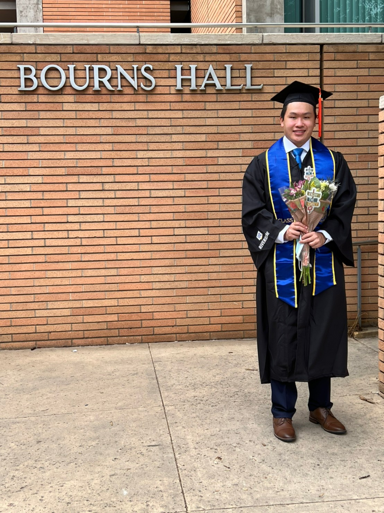

About Me
Who Am I?
My name is Ken Chun Lee. I am a 22 year old recent graduate from the University of California, Riverside with a major in computer engineering. I chose this major because I have always been fascinated by computers and wanted to learn about the ins and outs of how they work. As a computer engineering major, I was tasked with both software and hardware requirements and gained an thorough understanding of the interactions from a high level programming perspective as well as the low level electrical engineering perspective and everything in between. My hobbies include playing the guitar and piano, as well as going out on hikes and experiencing nature. Additionally, I enjoy taking on creative projects and is a big part of why I aspire to be an engineer. I recognize that anything that does not exist can exist with diligent research and perserverance.